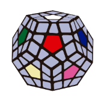
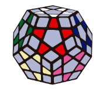

TUTORIAL MEGAMINX
- Estrella Blanca (La Base)
- Mantiene el centro blanco en la cara inferior o frontal.
- Busca las 5 aristas blancas y únelas al centro blanco haciendo coincidir el segundo color de cada arista con su centro lateral (creando una estrella de 5 puntas en lugar de una cruz).
- Esquinas Blancas (Primera Capa)
- Busca las 5 esquinas que contienen color blanco.
- Coloca cada esquina sobre el hueco donde debe ir haciendo coincidir sus 3 colores.
- Inserta la esquina en su sitio usando la secuencia: R U R' U' (Repite de 1 a 5 veces hasta que el blanco baje orientado).
- Capa Central e Inferior (Primera Banda / F2L Extendido)
- Ahora debes resolver las caras laterales adyacentes a la base blanca (que forman la mitad inferior del rompecabezas):
- Insertar Aristas de la primera banda: Coloca las aristas que van entre los centros adyacentes a la cara blanca usando el algoritmo de aristas del 3x3:
- Insertar a la derecha: U R U' R' U' F' U F
- Insertar a la izquierda: U' L' U L U F U' F'
- Completar las caras laterales inferiores: Trabaja de abajo hacia arriba rellenando las esquinas y aristas adyacentes a la cara blanca hasta que solo quede la cara superior (generalmente la cara Gris) sin resolver.
- Estrella Gris (Capa Superior)
- Algoritmo para la estrella: F R U R' U' F'
- Aplícalo desde diferentes ángulos hasta lograr que las 5 puntas grises queden orientadas en la cara superior.
- Alinear la Estrella Gris con los Centros
- Gira la cara superior (U) para ver cuántas aristas de la estrella coinciden con los centros laterales adyacentes:
- Busca que al menos 2 aristas continuas coincidan con sus centros laterales.
- Coloca las aristas correctas en la parte frontal e izquierda y aplica el algoritmo de permutación de aristas: R U R' U R U3 R' U
- Repite hasta que las 5 puntas de la estrella coincidan con sus 5 centros laterales.
- Colocar y Orientar Esquinas Grises (Resolver el Megaminx)
- Colocar las Esquinas en su Sitio:
- Busca una esquina que esté en su posición correcta (aunque esté girada).
- Usa el algoritmo para permutar las esquinas restantes: U R U' L' U R' U' L
- Orientar las Esquinas:
- Voltea el Megaminx para que la cara gris quede abajo.
- Trae una esquina gris no orientada a la posición inferior derecha.
- Repite la secuencia R U R' U' hasta que el gris quede mirando hacia abajo.
- Gira únicamente la cara inferior (D) para colocar la siguiente esquina sin resolver en el mismo hueco y repite la secuencia hasta armar todo el Megaminx.

